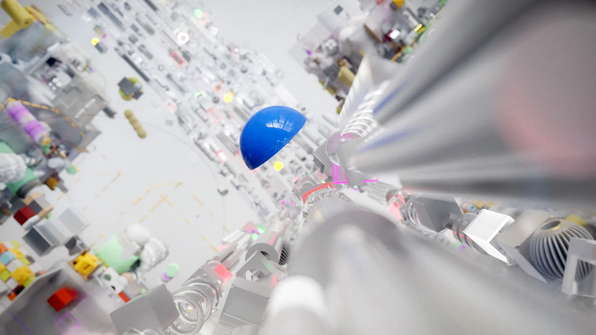
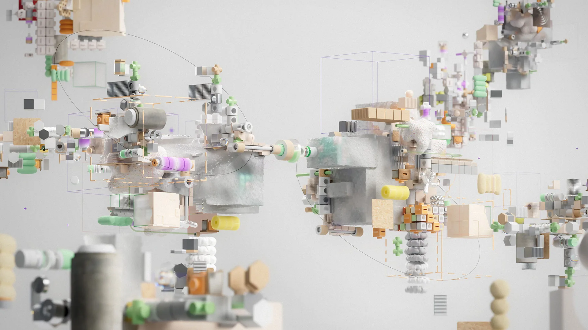
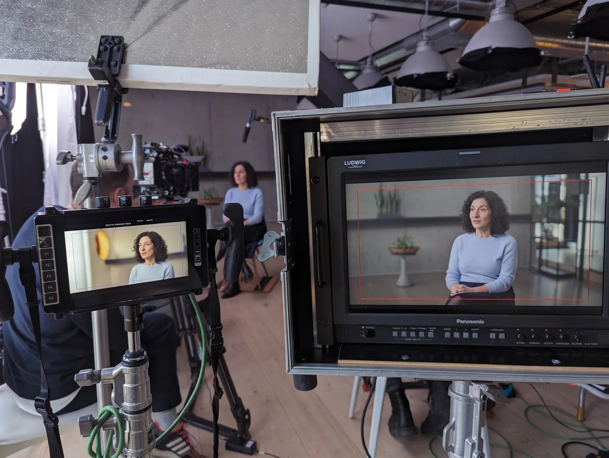
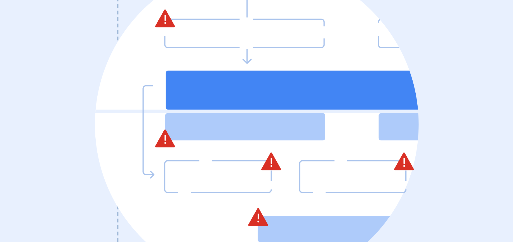
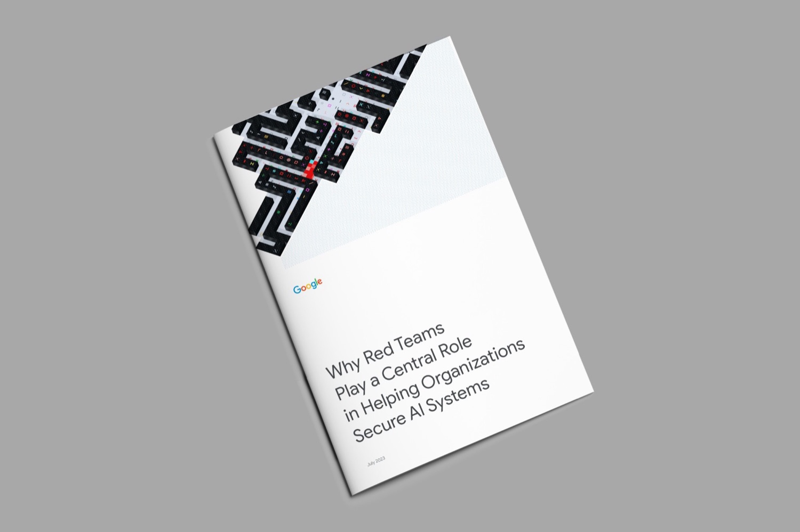
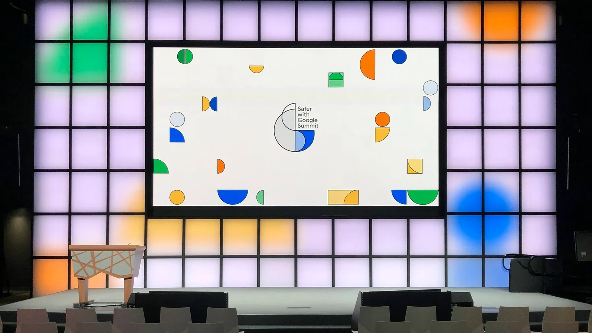
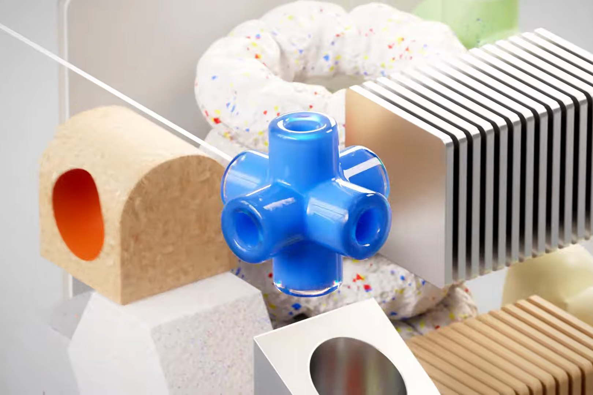

Brand Film · Creative Direction
Brand Films
Visions of privacy, safety, and security, turned into films that raise awareness and make people care
Safety Anthem
From concept to final cut, I led the creative direction for a motion graphics film designed to build awareness of Google’s safety leadership — making visible the work behind a word people hear often but rarely see explained. I partnered with an external agency team of writers, strategists, and art directors, bridging creative and organizational perspectives between them and Google’s internal teams.
The film became an expression of Google’s safety story and played a role in the launch of the Google Safety Engineering Center in India. It helped introduce Google’s growing safety and security efforts to an audience that included senior government leaders and key business partners.
- Concept
- “Born out of the toughest conditions”
- Role
- Concept, story development, creative direction
- Agency
- Across The Pond ↗
- Launch
- Google Safety Engineering Center, India


AI Safety
I concepted and directed a film about strengthening digital security with AI, translating complex technical work — including Google’s Secure AI Framework and research on the “defender’s dilemma” — into a public-facing brand story. Published on YouTube and ai.google, the film brought Google’s approach to securing AI systems to a broader audience. I led the creative direction, shaping the story and visual approach to make the work accessible without losing its substance.
- Role
- Concept, story development, creative direction
- Featuring
- Heather Adkins, VP, Security Engineering; Wieland Holfelder, VP, Engineering and Site Lead, Google Munich
- Published on



About Film & Motion
I use film and motion to make complex ideas easier to understand, bring important stories to life, and help organizations communicate what they stand for. My work spans concept development, creative direction, storytelling, and visual execution, often translating technical or unfamiliar subjects into something people can connect with.
The Safety Anthem helped launch the Google Safety Engineering Center in India, and the AI Safety film reached the public on ai.google.
More work

Secure AI Framework Risk MapSystems & Information Design
Security Analysis and ReportingEditorial & Content Design
Safer with Google SummitBrand Strategy · Event Design
Currently viewingBrand FilmsBrand Film · Creative Direction
Tell me about what you stand for.
Let’s talk